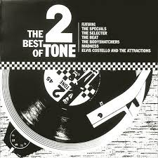

2-Tone Records.
If Ska had a home in the UK, it would be in Coventry. This was the birth place of many of the bands that played Ska music and importantly is the place where 2-Tone records was created by Jerry Dammers in the late 70's.Dammers was a member of prominent Ska band The Specials and created the record label to promote Ska music and re work the original Jamaican sound for British audiences. But 2-Tone was more than a record label, not only did it give its name and styling to the sub culture of UK Ska music but also promoted racial unity between black immigrants from Jamaica and the white working classes in the UK at a time of high racial tension .
This was done by Black and White musicians performing ska music together on stage (rare in the UK at the time) and dancing together in dance halls. Many of the songs by bands signed to 2-Tone also raised awareness of political issues for young people such as "Ghost Town"; a song about urban decay, de-industrialisation, un employment and violence in inner cities in the UK.